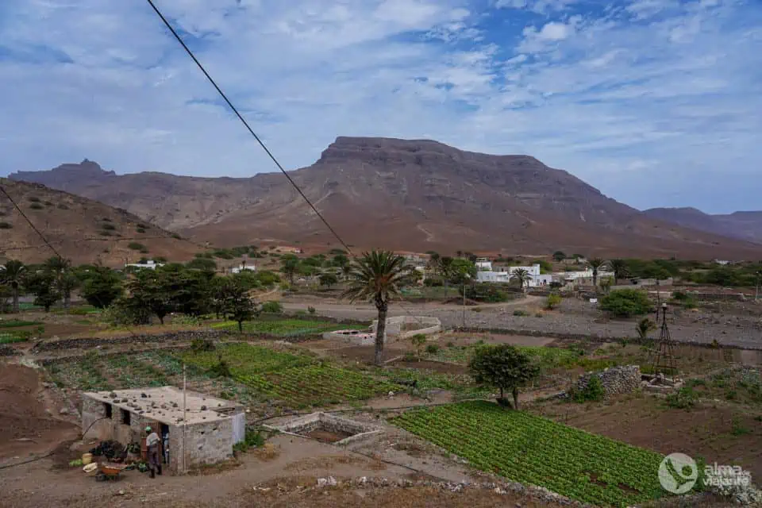
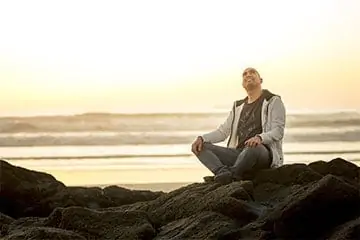

Ilha do Sal: O que fazer na Ilha mais turística de Cabo Verde
Por Filipe Morato Gomes | 16 Fev 2023 | VIAGENS | VIAGENS | VIAGENSProcura o que fazer na ilha do Sal, Cabo Verde? Pois bem, recentemente tive oportunidade de visitar a ilha do Sal, explorando as suas praias, cidades e vilas - como Espargos, Palmeira e Santa Maria - e algumas atrações naturais da ilha. E, do jardim botânico às piscinas de Buracona, passando pelas salinas e por bons restaurantes, a verdade é que ...
SOBRE O AUTOR

Olá! O meu nome é Filipe Morato Gomes, vivo em Matosinhos, Portugal, sou blogger de viagens, co-autor do projeto Hotelandia e Presidente da ABVP - Associação de Bloggers de Viagem Portugueses.
Tenho 51 anos e muita experiência de viagem acumulada. Já dei duas voltas ao mundo, fiz dezenas de viagens independentes e fui líder de viagens de aventura.
Mais recentemente, abracei um novo desafio chamado Rostos da Aldeia, onde se contam histórias positivas sobre as aldeias de Portugal e quem nelas habita.
Assine a newsletter e receba o livro da minha primeira volta ao mundo gratuitamente (está esgotado nas livrarias).